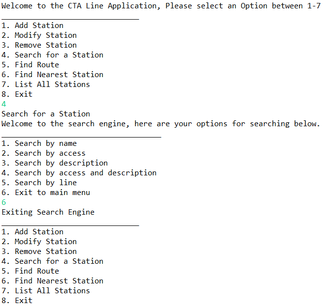

This project involved me utilizing Java to create a program where two stations are specified on the CTA system and then then the program returns the shortest route possible between the two stations. It also provides info on stations accessability as well as the closest station based on the user geographical coordinates.
